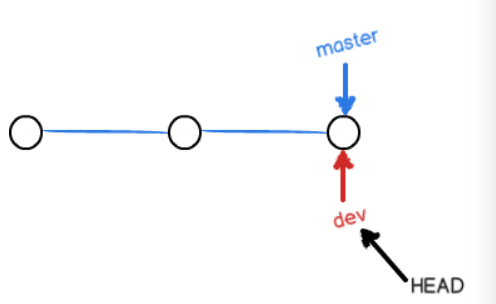
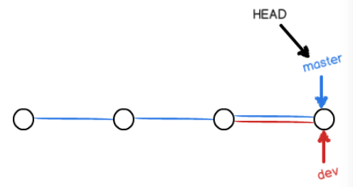
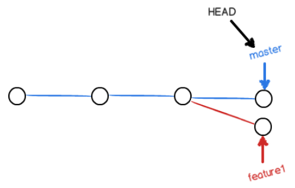

本文主要是复现一遍廖雪峰的Git教程中的操作，初学Git强烈建议阅读这篇教程！
安装与配置
安装Git
Linux下的安装:
- ArchLinux:
sudo pacman -S git - Debian:
sudo apt-get install git - 特别老的Linux:
sudo apt install git-core
- ArchLinux:
Win/Mac的安装可以去Git官网下载安装包。
配置
安装完成后，还需要进一步设置，首先配置用户名邮箱：git config --global user.name "your namegit config --global user.email "email@example.com
--global参数表示全局配置：你这台机器上所有的Git仓库都会使用这个配置。
对于全局配置Git将其保存在Linux的$HOME/.gitconfig以及Windows的%GIT%/etc/gitconfig下，而具体项目的Git配置则位于项目的.git/config下。可以直接在配置文件中查看和修改当前Git的配置。
创建版本库
版本库又称Repository，接下来以在本地创建一个新项目”learngit”为例，展现创建版本库的过程：
- 创建一个目录
mkdir learngit - 初始化git仓库
进入目录：cd learngit，在目录下初始化Git仓库：git init，此时会在目录下自动生成一个.git隐藏文件夹，这就是本地的版本库。 - 创建文件
echo "this is a README file" > README.md - 把文件添加到Git仓库
git add README.md - 把位于暂存区的文件提交到Git仓库，-m后写上本次提交的说明（改动记录）
git commit -m "first commit"
创建Git版本库时，Git自动为我们创建了唯一一个master分支，所以现在git commit就是默认往master分支上提交更改。
版本控制
每当文件修改到一定程度的时候，就可以“保存一个快照”，这个快照在Git中被称为commit。当想回滚到某个历史版本时就可以从一个commit恢复，然后继续工作。
加入我们要修改一个文件为2.0版本：echo "this is a README file v2.0" > README.md
重新add：git add README.md
再次commit：git commit -m "edit version to v2.0"
之后又进行了一次更新，改为3.0版本，再来一次上述操作：echo "this is a README file v3.0" > README.mdgit add README.mdgit commit -m "edit version to v3.0"
此时连同第一次一共完成了三次commit，可以使用git log查看这三次commit记录：
也可以用git log --pretty=oneline来简洁的显示
其中的hash码是SHA1计算出的commit id。HEAD指向最近的一次的commit，分支为master。上一个版本就是HEAD^，上上一个版本就是HEAD^^，以此类推。当然往上100个版本写100个^比较容易数不过来，所以写成HEAD~100。使用HEAD参照就可以定位之前某次提交的记录。
回退到上一个版本
如果一个版本写出了重大BUG/设计缺陷想放弃这个版本，亦或是误删了上个版本的文件，可以使用版本回退来回到过去。例如回到上一个版本：git reset --hard HEAD^
此时cat README.md可以看到：$ cat README.md
this is README.md file v2.0
说明已经回到了上一次commit的版本了。如果此时git log则会发现HEAD指针已经指向了第二次提交的结果。

撤销到未来的版本
如果想再次回到未来，由于用HEAD无法定位未来的版本，则需要未来版本的commit id。此时git log可以看到上次最新的commit已经消失，想要回到未来则需要未来版本的commit id来定位:git reset --hard 4419908，commit id只需要输入前几位，然后按Tab Git会自动补全。
为了防止找不到过去的commit id，Git提供了一个命令git reflog用来记录你的每一次命令。
比较文件区别
把README.md中的内容改成如下Git is a distributed version control system.
Git is free software distributed under the GPL.
然后执行一次commit，再次修改，在文件头部加两行：# Learn Git
I'm writing this README.md to learn Git.
Git is a distributed version control system.
Git is free software distributed under the GPL.
再次commit。两次修改可以看到被修改的文件数，增加和删除的行。Git才有一种近似LCS的文件diff算法。
用git diff HEAD^ -- README.md命令可以查看工作区和版本库里面版本的区别：
扩展知识：
git diff <branch1> <branch2>查看分支区别git diff <branch1>..<branch2> --name-status查看分支差异（只查看文件列表）git diff --cached查看暂存区文件和上次提交的区别git diff <path> <origin/path>查看本地文件和远端文件的区别
工作区与暂存区
git add <file>操作可以进行多次，git add .可以add当前目录下所有的文件。
修改后没有add的文件位于工作区（working tree），被add后的文件会被存入暂存区（stage）。使用git status可以查看暂存区文件的状态。
首先git status
可以看到当前nothing to commit,working tree clean，说明工作区内文件和最新的HEAD指向的快照一致，并且暂存区为空，无需commit。
然后在READMD.md中写入新的一行：echo "Git has a stage zone" >> README.md,再次git status
可以看到Changes not staged for commit，此时暂存区为空，说明工作区的README.md和HEAD指向的版本库中的对比不符，且没有被暂存。此时git add README.md则会把工作区新的README.md推入暂存区，再次git status
可以看到Changes to be Committed，并且文件高亮为绿色，说明暂存区的README.md和工作区的READMD.md已经保持一致，但是和HEAD指向的本地库中的还不一致，需要被commit。
此时如果再次修改README.md，则和工作区的README.md又不一致，git status中的信息又会变成Changed not staged for commit。再次git add READMD.md解决。
此时不忙commit，先创建一个新的文件LICENCE，然后git status
出现了新的状态Untracked files，说明LICENCE从没有被add过，需要被add
添加LICENCE文件：git add LICENCE
此时所有文件都变成了绿色，可以执行commit了。此时暂存区的状态如下：
执行commit后，看到暂存区被清空，再次显示nothing to commit,working tree clean
HEAD纸箱了commit开辟的新的节点，工作区域和HEAD指向的新的快照保持了一致，此时所有区的状态如下
总之：Git就是add工作区文件到暂存区暂存，再commit一次会提交所有暂存区的文件，修改后还没有被add进暂存区的文件不会被commit。
撤销修改
如果写错了文件，或者误删了文件，首先想到的就是用git reset切换到之前的版本，但是如果只是写错了一个文件，这种大面积的回退就得不偿失。
命令git checkout -- README.md意思就是，把README.md文件在工作区的修改全部撤销，这里有两种情况：
README.md自从修改后还没有被放到暂存区，现在撤销修改就回到和版本库一模一样的状态；README.md已经添加到暂存区后，又作了修改，现在撤销修改就回到添加到暂存区后的状态。
即git checkout -- <file>会先从暂存区找文件，找到了就用暂存区文件替代，找不到就用最新版本库中的替代。
git checkout -- <file>命令中的--很重要，没有--，就变成了“切换到另一个分支”的意思。新版本Git还提供了git restore <filename>的命令用于避免git checkout切换分支的歧义，建议尽量使用git restore。- 慎用
git checkout .，它删除一切unstaged的工作区修改，没有任何办法恢复！！！
如果不仅写错了文件还add到了暂存区：用命令git reset HEAD README.md或者git restore --staged README.md可以把暂存区的修改撤销掉（unstage）。git reset命令既可以回退版本，也可以把暂存区的修改回退到工作区。当我们用HEAD表示最新的版本。由于此时工作区还没有撤销更改，再次使用git checkout -- README.md。
如果不但改错了东西，还从暂存区提交到了版本库，可以用git reset --hard ^HEAD回退到上一个版本。
如果不但该错了东西，还提交到了版本库，并push到了远程库，那就只能本地回退，然后git push -f了。（但还是会在远程留下记录）
删除文件
Git知道你删除了文件，因此，工作区和版本库就不一致了，git status命令会立刻告诉你哪些文件被删除了：
此时如果你是误删，用git checkout -- README.md即可恢复。
如果你是真的要从版本库删除文件，就用git rm README.md删掉版本库中的文件，并commit。
如果用git rm README.md，会删除工作区READMD.md并上报给暂存区，此时使用git checkout -- README.md是无法恢复文件的。
这种情况下想要恢复文件，就要取消删除操作的暂存，然后git checkout -- README.md恢复。（可以git status看提示如何操作）
从来没有被添加到版本库就被删除的文件，是无法恢复的！所以在IDEA等IDE中开发时，创建新文件一定要开启“默认立即添加到本地仓库中”！
远程仓库
远程创建一个新的项目
如果从头创建一个新的项目，可以在github中创建一个新的Repository如”learngit”，并勾选Add a README file来初始化一个README.md文件。
然后把创建的repo clone到本地：git clone git@github.com:XUranus/learngit.git。
克隆后的文件夹里已经包含了.git文件夹和README.md，完成了本地库的创建。
为本地项目添加远程库
如果本地已经开始了一个项目，则GitHub上创建新项目不需要初始化README.md，它会创建一个完全为空的repo。在本地项目根目录按照如下步骤进行，则完成第一次commit。
git initgit add README.mdgit commit -m "first commit"git remote add origin git@github.com:XUranus/learngit.gitgit push -u origin master
其中git remote add origin git@github.com:XUranus/learngit.git意思是：远程库的名字就是origin，这是Git默认的叫法。
Git支持多种协议，包括https，但ssh协议速度最快。某些公司会封22端口，不得不用https
git push -u origin master是把本地库的内容推送到远程，用git push命令，实际上是把当前分支master推送到远程。
注意！由于2020年BLM运动，GitHub初始化仓库页用
git branch -M main把master分支重命名为main，Git本地工具的默认分支依旧是master
由于远程库是空的，我们第一次推送master分支时，加上了-u参数，Git不但会把本地的master分支内容推送的远程新的master分支，还会把本地的master分支和远程的master分支关联起来，在以后的推送或者拉取时就可以简化命令。之后，只要本地作了提交，就可以通过命令git push origin master上传到远程仓库。
分支管理
分支可以方便协调多人合作，备份未完成的代码而不影响他人。
创建分支与合并分支
一开始的时候，master分支是一条线，Git用master指向最新的提交，再用HEAD指向master，就能确定当前分支，以及当前分支的提交点：
每次提交一个commit，master和HEAD就会前进一个节点，master分支会越来越长。
使用git checkout -b dev创建一个新的分支(或者git branch dev & git checkout dev)，并在上面开发新功能。Git新建了一个指针叫dev，指向master相同的提交，再把HEAD指向dev，就表示当前分支在dev上：

创建新分支实质上就是创建一个新的指针dev指向当前提交，再把HEAD指向dev,不设计其他文件的变化，所以可以瞬间完成。
从现在开始，后续的修改和提交就不再针对master分支了，而是dev分支。每当commit一次dev就向前一步，而master不变。
假如我们在dev上的工作完成了，就可以把dev合并到master上。直接把master指向dev的当前提交，就完成了合并，所以Git分支合并也很快。

合并完分支后，可以删除dev分支。删除dev分支就是把dev指针给删掉，删掉后，我们就剩下了一条master分支：
总结一下这个过程：
git checkout -b dev切换到dev分支。-b参数表示创建分支并切换，等效于这两条命令：git branch devgit checkout dev用
git branch查看当前的分支，已经切换到了dev做一点修改：
echo "creating a new branch is quick." >> README.md，然后提交：git add README.mdgit commit -m "switch to new branch dev"
这次提交就是在dev上往后创建一个节点了。
当我们在dev上完成了开发，想把master同步到dev,用git checkout master回到master，状态如下：
此时查看刚才修改的README.md可以看到添加的内容不见了，那个添加位于dev分支。dev分支领先master一次提交，我们吧dev的更改合并到master上:git merge devgit merge命令用于合并指定分支到当前分支。合并后，再查看README.md的内容，就可以看到，和dev分支的最新提交是完全一样的。
合并完成后，就可以放心地删除dev分支了：git branch -d dev,此时使用git branch再次只能看到master分支了。
上述合并过程的
Fast-forward信息告诉我们，这次合并是“快进模式”，也就是直接把master指向dev的当前提交，所以合并速度非常快。因为创建、合并和删除分支非常快，所以Git鼓励你使用分支完成某个任务，合并后再删掉分支，这和直接在master分支上工作效果是一样的，但过程更安全。
git checkout既可以撤销修改，也可以切换分支。为了避免误解，新版Git提供git switch -c <branch>来创建并切换分支，用git switch <branch>切换到已有的分支。
扩展知识：
git branch用于查看本地分支，git branch -r可以用于查看远程分支，git branch -a用于查看本地和远程的全部分支git branch -d -r <branchname>+git push用于删除远程分支- Windows上Git分支名称大小写不敏感，应规避用大小写区分分支
分支管理策略
通常，合并分支时，如果可能，Git会用Fast forward模式，但这种模式下，删除分支后，会丢掉分支信息。如果要强制禁用Fast forward模式，Git就会在merge时生成一个新的commit，这样，从分支历史上就可以看出分支信息。
假设之前的例子使用-no-off的普通方式合并分支：git merge --no-ff -m "merge with no-ff" dev
merge之后的历史有分支，能看出来做过合并，就像这样：
日常的开发中应遵循如下的分支管理原则：
master分支应该是非常稳定的，也就是仅用来发布新版本，不能在上面干活- 干活都在
dev分支上。dev分支是不稳定的。到一个版本发布时，把dev分支合并到master上，在master分支发布这个版本 - 每个人都在
dev分支上干活，每个人都有自己的分支，时不时地往dev分支上合并 - 团队协作的分支看起来类似这样：
解决冲突
当两个分支同时修改，就有可能产生冲突。
比如在master下创建一个新分支feature1。切换过去，加上一行：git switch -c feature1echo "YOU MAY NEED TO FIX CONFLICTS BEFORE MERGE." >> README.mdgit add README.mdgit commit -m "need to fix conflict"
然后切换回master,并做修改：git switch masterecho "You may need to fix conflicts before merge." >> README.mdgit add README.mdgit commit -m "need to fix conflict"
此时状态如下图所示：

在master上git merge feature1,看到冲突提示：
查看README.md，可以看到冲突已经被标出# Learn Git
I'm writing this README.md to learn Git.
Git is a distributed version control system.
Git is free software distributed under the GPL.
Git has a stage zone
creating a new branch is quick.
<<<<<<< HEAD
You may need to fix conflicts before merge.
=======
YOU MAY NEED TO FIX CONFLICTS BEFORE MERGE.
>>>>>>> feature1
此时用git status可以看到可选的操作，可以放弃merge,也可以手动解决冲突。
这里选择保留master上的更改（可以使用vscode的插件），解决完冲突后，README.md如下：# Learn Git
I'm writing this README.md to learn Git.
Git is a distributed version control system.
Git is free software distributed under the GPL.
Git has a stage zone
creating a new branch is quick.
You may need to fix conflicts before merge.
重新提交：git add README.mdgit commit -m "fix conflict"
merge完成。用git log --graph命令可以看到分支合并图。
修复Bug与新建feature
工作在dev分支时，接到一个issue-251的Bug Report，创建一个issue-251的临时分支来修复bug，当修复完毕后，再删除临时分支。
但是此时dev上的工作做到一半，git status可以看到文件被修改还没提交:
此时切换分支会提示报错，要求放弃本地修改，或者commit。Git提供了一个功能叫stash，用于把工作暂存起来。git stash之后再git status，工作区就是干净的了:
此时就可以着手修复Bug了，接下来的的工作流程如下:
- 假设要去
master上修复Bug：git switch master - 创建一个
issue-251分支：git switch -c issue-251 - 修复完后提交
git commit -m "fix bug issue-251" - 切换回
master分支：git switch master - 完成合并：
git merge --no-ff -m "merge bug fix 251" issue-251 - 修复完Bug，切换回
dev分支继续干活：git switch dev，并删除临时分支：git branch -d issue-251
此时git status查看工作区还是干净的。使用git stash list查看暂存的工作:
要恢复现场，有两种办法：
git stash apply恢复，但不会删除stash的内容，需要再用git stash drop来删除。git stash pop恢复现场且删除暂存的内容。
此时再用git stash list就看不到任何stash内容了。此时git status又可以看到文件被修改的提示了。
刚才在master分支修复了Bug，但是dev分支早期也是从master上派生过来的，所以这个Bug在当前dev分支上也是存在的。如果在dev上再次修复一次Bug，dev去merge整个master就太繁琐了。为了方便操作，Git专门提供了一个cherry-pick命令，让我们能复制一个特定的提交到当前分支。假设刚才提交的commit id是4c805e2，用git cherry-pick 4c805e2就可以把单个修改Bug的commit复制到dev上来。
开发一个新feature，最好也新建一个分支如feature-101，在上面开发，完成后去dev或者master上merge。
如果一个功能开发到一半就被要求取消，即一个feature分支被创建后却没有被合并，此时该分支是无法删除的。 如果要丢弃一个没有被合并过的分支，可以通过git branch -D <branch>强行删除。
知识点：
Git每次的新提交和修改都是创建新的commit节点：例如用
git commit --amend修改上一次commit的message，亦或是用git cherry-pick <commit id>合并指定commit，都会创建一个新的commit节点并拥有新的独一无二的commit id。
多人合作
- 用
git push origin <branch-name>推送自己的修改 - 如果推送失败，则因为远程分支比你的本地更新，需要先用
git pull试图合并 - 如果合并有冲突，则解决冲突，并在本地提交
- 没有冲突或者解决掉冲突后，再用
git push origin <branch-name>推送
如果
git pull提示no tracking information，则说明本地分支和远程分支的链接关系没有创建，用命令git branch --set-upstream-to <branch-name> origin/<branch-name>。
不是一定要把本地分支往远程推送:
master分支是主分支，dev分支是开发分支，团队所有成员都需要在上面工作，需要与远程同步bug分支只用于在本地修复bug，没必要推到远程feature分支是否推到远程，取决于你是否和你的小伙伴合作在上面开发
本地新建的分支如果不推送到远程，对其他人就是不可见的；
GitHub上clone下来的内本地容默认只看得到master分支（可以用git remote -v查看本地关联的远程库信息。要在在本地创建和远程分支对应的分支，使用git switch -c <branch-name> origin/<branch-name>（本地和远程分支的名称最好一致）
把master分支推送给远程仓库：git push origin master。同理，把dev推送给远程仓库：git push origin dev
git pull会自动拉去当前分支远端最新的代码并自动合并，如果出现大规模的冲突则会很麻烦。如果追求安全可控最好使用git fetch，git pull实际上做的事等于git fetch && git merge，git pull会自动合并创建一个新的commit节点，而git fetch只是拉取远端最新代码到本地，需要自己merge。详见git pull 和 git fetch的区别
Rebase
Git Rebase详见这篇讲解：你真的懂git rebase吗？
git merge操作合并分支会让两个分支的每一次提交都按照commit时间（并不是push时间）排序，并且会将两个分支的最新一次commit点进行合并成一个新的commit，最终的分支树呈现非整条线性直线的形式。
git rebase操作实际上是将当前执行rebase分支的所有基于原分支提交点之后的commit打散成一个一个的patch，并重新生成一个新的commit hash值，再次基于原分支目前最新的commit点上进行提交，并不根据两个分支上实际的每次提交的时间点排序，rebase完成后，切到基分支进行合并另一个分支时也不会生成一个新的commit点，可以保持整个分支树的完美线性。
当我们开发一个功能时，可能会在本地有无数次commit，而你实际上在你的master分支上只想显示每一个功能测试完成后的一次完整提交记录就好了，其他的提交记录并不想将来全部保留在你的master分支上，那么rebase将会是一个好的选择，他可以在rebase时将本地多次的commit合并成一个commit，还可以修改commit的描述等。
标签管理
每个commit可以看成是一个版本，有一个唯一的commit id，如果和他人交流提供版本号，用一长串hash码是很不方便的，所以Git提供了Tag的功能，Tag可以是类似”v1.0”,”v2.0”的版本号，他看成是commit id的别称。
使用git tag <tagname>可以给HEAD指向的commit打上Taggit tag -a <tagname> -m <tag message> <commit id>可以给指定commit id添加Tag和Tag的描述信息，-m为可选项目git tag查看所有的Taggit tag -d <tagname>删除某个Taggit show <tagname>看某个Tag的详细信息git push origin <tagname>推送Tag到远程
多个远程仓库
一个本地仓库可以关联不止一个远程仓库，所以可以同时推送项目到GitHub和Gitee。
首先git remote查看关联的远程仓库：
然后git remote rm origin删除origin远程库，在Gitee创建项目并关联：git remote add gitee git@gitee.com:XUranus/learngit.git,重新关联GitHub：git remote add github git@github.com:XUranus/learngit.git。
此时git origin -v就可以看到两个远程库了，当要同时推送给两个远程库时，只需要：git push github mastergit push gitee origin
Pull Request
如果要给某个开源项目贡献代码，需要先fork到自己的repo里，然后修改后commit到自己的repo里，最后pull request等待项目所有者merge
自定义与配置别名
安装后初次使用需要配置用户名邮箱：
git config --global user.name "your namegit config --global user.email "email@example.com优化高亮显示
git config --global color.ui true建议配置oh-my-zsh获得最佳体验
git config --global alias.unstage 'reset HEAD'
配置后撤销stage直接用git unstage README.md即可git config --global alias.lg "log --color --graph --pretty=format:'%Cred%h%Creset -%C(yellow)%d%Creset %s %Cgreen(%cr) %C(bold blue)<%an>%Creset' --abbrev-commit"
配置后使用git lg可以高亮查看分支信息
本地库的配置文件位于.git/config，带有--global的为全局配置，位于~/.gitconfig中
.gitignore
时候和开发时项目目录下会产生class文件，链接文件，依赖，配置信息。如果不想这些被添加进库中，可以在项目根目录处配置.gitignore文件。
Github提供的.gitignore配置文件https://github.com/github/gitignore
Git LFS
Git一般只用于跟踪文本文件的变化，如果遇到一些需要跟踪二进制大文件的变化的场景（如二进制模型文件）则需要安装Git LFS(git Large File Storage)插件。
- 安装Git LFS：
sudo pacman -S git-lfs - 启动Git LFS：
git lfs install - 使用Git LFS跟踪二进制文件：
git lfs track <file> - 查看Git LFS跟踪的文件：
git lfs ls-files
Git LFS不是通用功能，请先确定你的Git服务提供者是否已经开启了LFS，如果没有开始则无法将LFS跟踪的文件提交上去。
git fsck
如果文件已经被add到暂存区，文件因为一些操作丢失，如：没有commit就git reset --hard HEAD，此时存在将丢失的文件找回的方法。
被暂存后，此时文件就已被索引了。此时使用git fsck --lost-found可以列出所有悬空的文件索引：Checking object directories: 100% (256/256), done.
Checking objects: 100% (581/581), done.
dangling blob 45b25090bd796b456169460740e4baef2577e17e
dangling blob 14141e7e5e734425b625b3a4662cb56a3b5fecd8
dangling commit cbe575e408f1c9a1a8721c61d9c0c15003c25caf
dangling commit e69643f87dc45747be44b92f01a6f5bcd4403c66
其中blob类型的就是丢失的文件，后面跟文件的hash。可以用git show <hash>来查看一个丢失的未commit的文件的内容，使用git merge <hash>来恢复该文件。
其他注意点
- 建议使用UTF-8编码，避免平台冲突
相关资料
Git官网
Git官方教程 GitBook
廖雪峰的Git教程（新手强烈推荐！）
Git基本命令查阅表
学习Git分支的游戏
GitHub官方教程
图解Git命令
用好这几个工具，能大幅提升你的 Git/GitHub 操作效率！
收好这份 Git 命令应急手册，关键时刻可保你一命